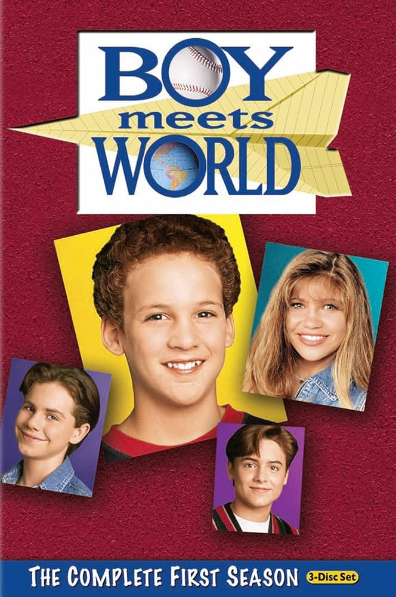
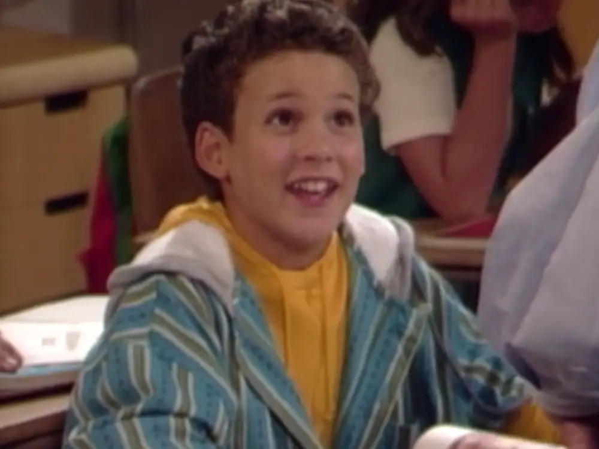
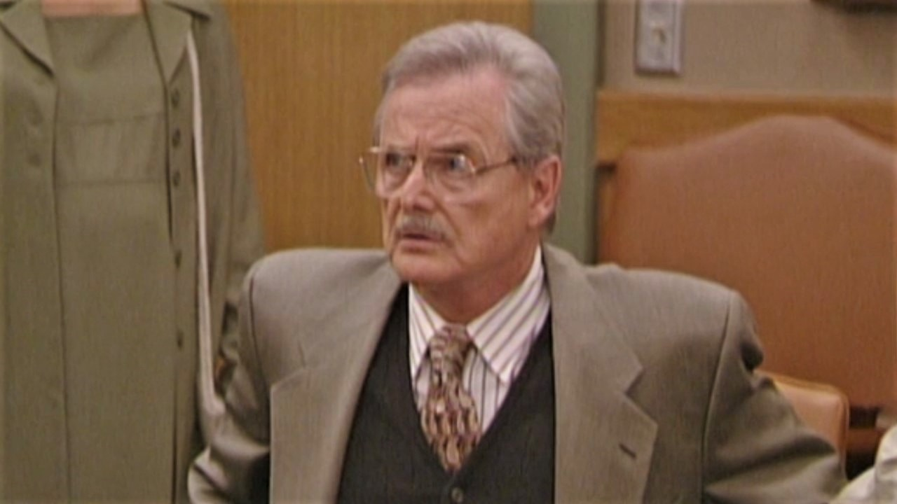
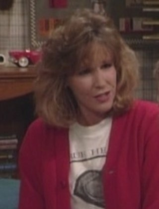

"Boy Meets World" is all about Cory Matthews growing up, from a kid in elementary school to a married dude. We're riding shotgun with Cory, his friends, and fam across seven seasons of life lessons, laughs, and all those ups and downs of growing up. It's a total trip through the rollercoaster of life!
CharactersCory Matthews Played by: Ben Savage Mr. Feeny  Played by: William Daniels Amy Matthews  Played by: Betsy Randle |